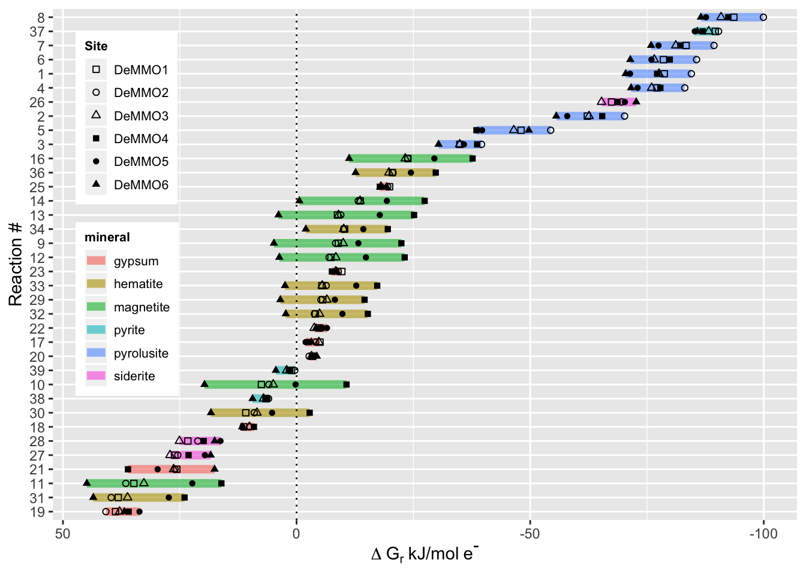

Thermodynamic Modeling with CHNOSZ
Are you curious what sorts of metabolic processes might be occurring at your study site? Using in situ geochemical data, you can model the Gibbs free energy available from metabolic reactions and predict which metabolisms are energetically favorable! Gibbs free energy can be modeled using the following equation:
\[\Delta G_r - RT ln \frac{K_r}{Q_r }\]
where \(\Delta G_r\) is the Gibbs energy of reaction r under in situ conditions, \(K_r\) and \(Q_r\) are the equillibrium constant and activity product of the rth reaction, R is the gas constant, and T is temperature in Kelvin.
\(Q_r\) can be calculated using the following equation:
\[Q_r = \prod a_i ^{v_{i,r}}\]where \(a_i\) is the activity of the ith species and \(v_{i,r}\) is the stoichiometric coefficient of the ith species in the rth reaction.
For this tutorial I’m using data and code from my publication in Geobiology. We calculated activity coefficients for each species of interest using Spece8 in Geochemist’s Workbench using geochemical data collected from our field site. Then we used the CHNOSZ package to calculate Gibbs free energy of various metabolic reactions. First, let’s check out what the activity data looks like.
#load tidyverse library
pacman::p_load(tidyverse)
activities <- read_csv("https://raw.githubusercontent.com/CaitlinCasar/Casar2020_DeMMO_MineralHostedBiofilms/master/orig_data/DeMMO_SpecE8_aqueousGas.csv")You can see we calculated activites for Ca2+, acetate, CH4, Fe2+, H+, HCO3-, HS-, Mn2+, NH4+, NO2-, NO3-, and SO42- at six different sites called DeMMO1-6.
Once you have your activity coefficients, then you need to decide what reactions you want to model. I was interested in metabolic reactions with minerals, so I created a spreadsheet of balanced reactions with minerals and aqueous species available in situ. Let’s load this data and preview it here.
#import DeMMO mineral reactions
reactions <- read_csv("https://raw.githubusercontent.com/CaitlinCasar/Casar2020_DeMMO_MineralHostedBiofilms/master/orig_data/reactions_aq_gas.csv") %>%
filter(!product.f == "manganite") #removing reactions with manganite because we don't have equation of state data for this The formatting of this data is important for compatability with CHNOSZ, so make sure you include the details I’m showing here when you balance your reactions. Notice that the reactant stoichiometric coefficients are negative because they’re on the left side of the reaction, while products are positive because they’re on the right side of the reaction. Now we’re ready to model Gibbs free energy from these reactions in CHNOSZ! First we’ll load the CHNOSZ library.
#load the CHNOSZ library
pacman::p_load(CHNOSZ)Let’s take a look at the available species for modeling reactions in the CHNOSZ database:
thermo_db <- thermo()$obigt %>% as_tibble()A few minerals that I was interested in were missing in the database, but that’s ok! If you have the Gibbs free energy available at stadard conditions and the equation of state data for your reactant, you can add it to the CHNOSZ database. Let’s add pyrolusite and ferrihydrite with the mod.obigt function!
#add pyrolusite to database
pyrolusite <- mod.obigt("pyrolusite", G=-111100, H=-124283, S=12.61, V=17.3, formula="MnO2", state="cr", a1.a=12.55, a2.b=9.761, a3.c=-2.105)
#add ferrihydrite to database
ferrihydrite <- mod.obigt("ferrihydrite", G=-111200, H=-127800, S=16.7, V=20.88, formula="FeOOH", state="cr", a1.a=8.70, a2.b=36.71, a3.c=-1.0146)You can set your temperature and energy units like this:
#set temperature units to Kelvin
T.units("K")
#set energy units to joules
E.units("J")Let’s calculate logK:
logK <- reactions %>%
pivot_longer(reactant.a:state.i,
names_to = c(".value", "set"),
names_pattern = "(.+).(.+)") %>% #pivot from wide to long dataframe
unite("react_prod", reactant:product, na.rm = TRUE, remove = F) %>% #unite the reactants and products into one column
filter(!react_prod == "") %>% #remove any rows with missing react_prod values
group_by(rxn.number) %>% #group by reaction number for calculations
summarise(DeMMO1 = subcrt(react_prod, coeff, state, T=283.45)$out$logK,#calculate logK using in situ DeMMO1 temperature for all other reactions
DeMMO2 = subcrt(react_prod, coeff, state, T=285.55)$out$logK,
DeMMO3 = subcrt(react_prod, coeff, state, T=289.35)$out$logK,
DeMMO4 = subcrt(react_prod, coeff, state, T=295.65)$out$logK,
DeMMO5= subcrt(react_prod, coeff, state, T=304.85)$out$logK,
DeMMO6 = subcrt(react_prod, coeff, state, T=294.65)$out$logK) %>%
pivot_longer(cols = DeMMO1:DeMMO6, names_to = "Site", values_to = "LogK") %>% #pivot from wide to long for merging later
distinct() #remove the duplicate rows Now we need to calculate logQ:
activities <- activities %>%
pivot_longer(`Ca+2`:CO, names_to = "react_prod", values_to = "activity") #pivot from wide to long for joining
logQ <- reactions %>%
pivot_longer(reactant.a:state.i,
names_to = c(".value", "set"),
names_pattern = "(.+).(.+)") %>% #pivot from wide to long
unite("react_prod", reactant:product, na.rm = TRUE, remove = F) %>% #unite the reactant and product columns into one column called react_prod
left_join(activities) %>% #join with the activities data
filter(!is.na(activity)) %>% #remove any activities with NA values
mutate(logQ = if_else(!is.na(reactant), -abs(coeff)*activity, abs(coeff)*activity)) %>% #multiply each species by its stoichiometric coefficient
group_by(rxn.number, Site) %>% #group on the reaction number and site
summarise(logQ = sum(logQ)) #calculate logQ Finally, it’s time to calculate Gibbs free energy yield from each reaction!
deltaG <- logK %>%
left_join(logQ) %>% #join the logK and logQ tables
left_join(reactions %>% select(rxn.number, e.transfer, reactant.a)) %>% #add the reaction number, number of electrons transferred, and minerals from each reaction
rename(mineral = "reactant.a") %>% #rename reactant.a to mineral for clarity
mutate(deltaG = (-2.303*8.314*283.45*(LogK-logQ))/(e.transfer*1000)) #calculate deltaG for each reaction at each site Lets’s take a look at the deltaG table:
Now, let’s plot the data and see which metabolic reactions with minerals are energetically favorable under in situ conditions at DeMMO:
deltaG %>%
ggplot(aes(deltaG, reorder(rxn.number, -deltaG), shape=Site, group=rxn.number)) +
theme_gray() +
geom_line(aes(color=mineral), size=2.5, alpha=0.6) + #color each line spanning the deltaG values for the six sites by the mineral in the reaction
geom_point() +
scale_shape_manual(values = c(0,1,2,15,16,17)) + #manually set the shapes for each point to denote the six different sites
scale_x_reverse() + #reverse the x-axis to show exergonic values on the right, this is standard for this kind of data
labs(x=expression(Delta~G[r]~'kJ/mol'~e^{textstyle("-")})) + #generate the axis labels
ylab("Reaction #") +
geom_vline(xintercept = 0, linetype="dotted", color = "black") + #add a vertical line at zero for reference
theme(legend.position = c(.1, .6), legend.text=element_text(size=8), legend.title = element_text(size=8, face="bold")) + #position the legend on the left
theme(legend.key.size = unit(0.2, "in")) #resize the legend to make it fit 
Everything that plots to the right of the dotted line is exergonic, while everything to the left of the dotted line is endergonic. The most exergonic and therefore the most energetically favorable reactions occur with the mineral pyrolusite, followed by pyrite. If you’re curious which reactant was coupled to these minerals for each reaction, refer back to the reactions table above! 👩🔬
Fork Me